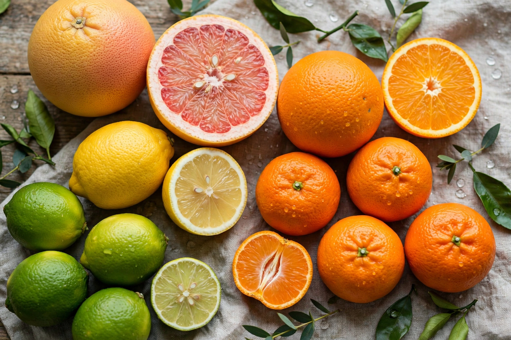

Citrus

Family: Rutaceae
Subfamily: Aurantioideae
Origin: South, East and Southeast Asia; Australasia
Citrus is a genus of flowering trees and shrubs in the rue family, Rutaceae. Plants in the genus produce citrus fruits, including important crops such as oranges, lemons, grapefruits, limes, mandarins and pomelos. The genus originated in South, East and Southeast Asia and Australasia, and citrus fruits have been cultivated for several thousand years.
Taxonomy and hybridisation
Citrus taxonomy is famously complicated because species readily hybridise and reproduce by apomixis, fixing hybrid genotypes. Most commercial types descend from a small number of ancestral species — principally the citron, mandarin, pomelo, and papeda group. The sweet orange is a mandarin–pomelo hybrid; the lemon derives from bitter orange and citron; the grapefruit arose in Barbados from sweet orange and pomelo.
The fruit
The citrus fruit is a modified berry, a hesperidium, with a leathery rind (exocarp and mesocarp) containing aromatic oil glands, and juicy segments filled with pulp vesicles. Fruits are rich in vitamin C and citric acid, which gives them their tart flavour and preservative qualities; historically citrus juice was carried on ships to prevent scurvy.
Cultivation and threats
Citrus is grown throughout the subtropics and tropics, with major production in Brazil, China, India, Mexico, Spain and the United States. Trees are usually propagated by grafting buds onto rootstocks. The industry is severely threatened by citrus greening disease (huanglongbing), a bacterial disease spread by psyllid insects, and by citrus canker and tristeza virus.